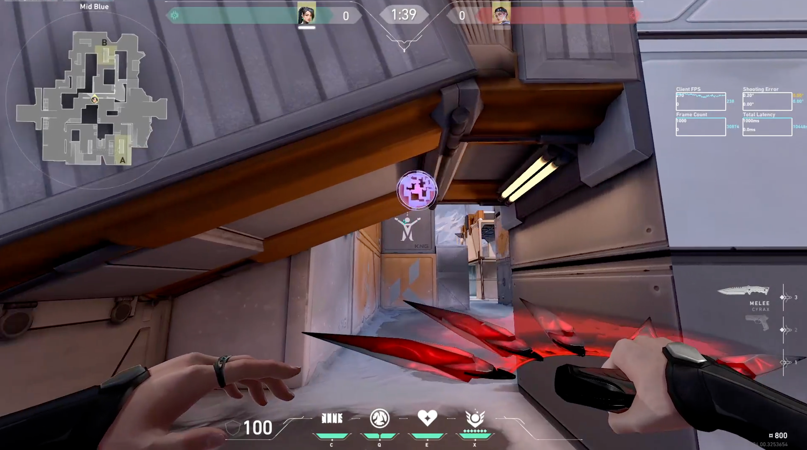
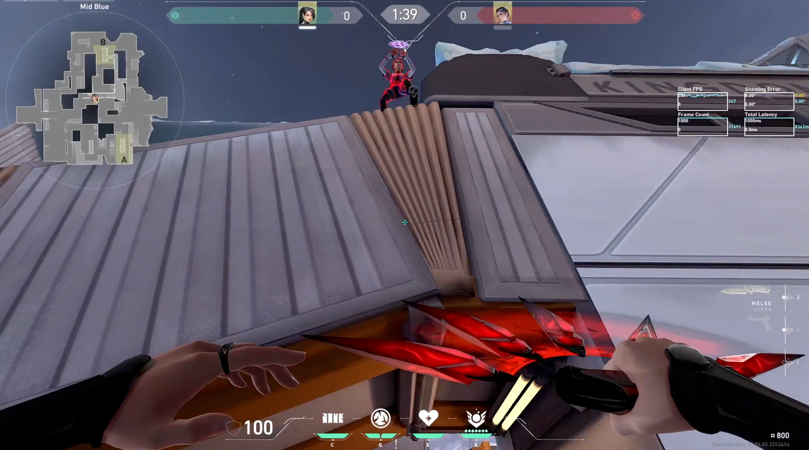

발로란트 10.07 업데이트 요약
깨어나세요, 게이머 여러분, 새 패치가 출시되었습니다.
PC 및 콘솔에서 다수의 버그를 수정했습니다. 요원 9명의 버그가 수정되었으며 UI도 일부 개선되었습니다. 콘솔의 경우 이제 게임 종료 시 및 대전 세부 사항 화면에서 타임라인을 확인하고 게임에서 있었던 일을 라운드별로 분석할 수 있습니다. (경쟁전, 신속플레이 및 일반전 한정)
여러분 모두 VCT 소식을 따라잡고 계시기를 바랍니다. 어떤 팀이 마스터스 토론토에 진출할지 알게 되기까지 한 달밖에 남지 않았거든요. 어떤 팀을 응원하시나요?
좋은 하루 보내세요!
-애쉬
전체 플랫폼
버그 수정
요원
- 레이나
시야가 제한된 상태에서 레이나의 궁극기 시각 효과가 보이던 버그를 수정했습니다.
- 웨이레이
웨이레이가 궁극기 구슬을 획득하는 도중에 굴절을 사용해도 올바르게 되돌아갈 수 있도록 버그를 수정했습니다.
웨이레이가 어비스의 플레이 가능 지역 밖에서 굴절을 발동할 수 있던 버그를 수정했습니다.
웨이레이가 순간이동 지점 바로 위에서 굴절을 발동할 경우 하늘을 바라보고 있던 버그를 수정했습니다.
- 케이/오
케이/오가 무력화/명령 효과로 아군에 의해 부활하던 도중 사망할 경우 부활 음향 효과가 지속되던 버그를 수정했습니다.
- 바이스
바이스의 벽이 특정 시점에 연막 스킬과 겹칠 경우 적이 바이스의 벽 안에 끼던 버그를 수정했습니다.
바이스의 가지치기가 발동될 때 적이 점프할 경우 적이 가지치기에 끼던 버그를 수정했습니다.
바이스의 가지치기 음향 효과가 적이 사거리 밖으로 나가거나 바이스가 사망한 이후에도 적에게 계속 출력되던 버그를 수정했습니다.
- 클로브
클로브의 계략 장착 시 전장 시점에서 높이 차이가 있는 높은 곳의 아래가 보이던 버그를 수정했습니다. (말로 설명하기는 어려우니 직접 보여드리겠습니다!)
 
- 사이퍼
적이 함정에 적중한 후 순간이동으로 함정에서 벗어난 경우 재설치한 동일 함정을 속박되지 않고 지나갈 수 있던 버그를 수정했습니다.
- 테호
아마겟돈 지면 표시가 라운드 동안 남아있던 버그를 수정했습니다.
- 오멘
오멘이 더 짙은 다른 연막과 겹쳐서 어둠의 장막을 사용할 경우 시야가 잘 보이지 않던 버그를 수정했습니다. (연막 내부에서 시야가 가려지는 연막을 의미합니다. 예: 제트의 연막 폭발, 브림스톤의 공중 연막 등)
- 클로브
클로브의 활력 회복 지속시간이 관전자 클라이언트에서 잘못 표시되던 버그를 수정했습니다.
- 데드록
데드록의 그물 시각 효과가 얇은 벽 너머로 보이던 버그를 수정했습니다.
- 소바
소바의 팔과 드론이 요원 선택 화면에서 서로 겹치던 버그를 수정했습니다.
- 체임버
시야가 제한된 상태에서 체임버의 시계와 안경이 보이던 버그를 수정했습니다
일반
볼트 무기 스킨이 간혹 의도한 것보다 더 밝게 빛나, 광과민성 문제를 발생시키던 버그를 수정했습니다.
PC 한정
버그 수정
경쟁전 업데이트- 대전 기록 및 게임 종료 화면에서 남은 랭크 방어가 없을 경우 랭크 방어 아이콘에 커서를 올렸을 때 텍스트가 나타나지 않던 버그를 수정했습니다.
플레이어 행동- 특정 언어의 Riot ID가 소셜 패널에서 잘린 채로 표시되던 버그를 수정했습니다.
프리미어- 순위 페이지의 드롭다운과 텍스트가 간혹 맞지 않던 버그를 수정했습니다.
콘솔 한정
경쟁전 업데이트
- 타임라인 보기를 추가해 게임 종료 시 및 대전 세부 사항 화면에서 타임라인을 확인하고 게임에서 있었던 일을 라운드별로 분석할 수 있습니다.
- 이 기능은 경쟁전, 신속플레이 및 일반전에서만 이용할 수 있습니다.
버그 수정
요원
- 오멘
- 오멘이 어둠의 장막을 사용하려다 사망할 경우 어둠의 장막 조준 민감도가 다음 연막을 사용하기 전까지 낮은 수치로 고정되던 버그를 수정했습니다.
- 경쟁전 업데이트
- 순위표 페이지에서 반복적으로 필터를 변경하고 항목을 스크롤할 경우 다른 항목을 선택할 수 없게 되던 버그를 수정했습니다.
- 플레이어 행동
- 긴 계정이름을 가진 플레이어가 소셜 패널의 콘솔 로고와 겹치던 버그를 수정했습니다.
- 유효하지 않은 Riot ID에 파티 초대를 보낼 경우 초대 창을 닫고 다시 열기 전까지 해당 창이 고정되던 버그를 수정했습니다.
발로란트 다음 패치노트로 이동//발로란트 다다음 패치노트로 이동
발로란트 공식 패치노트로 이동하기